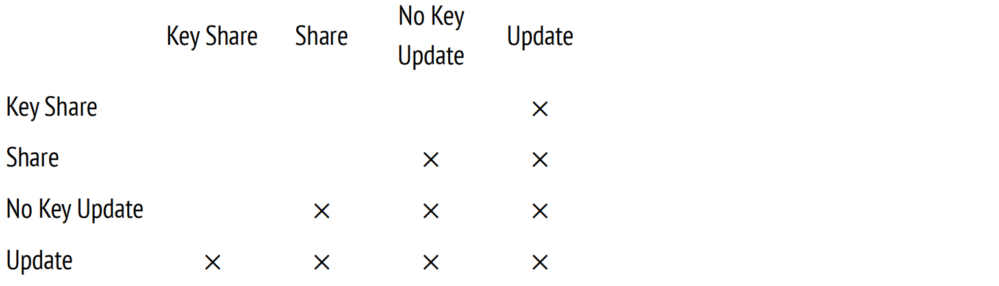
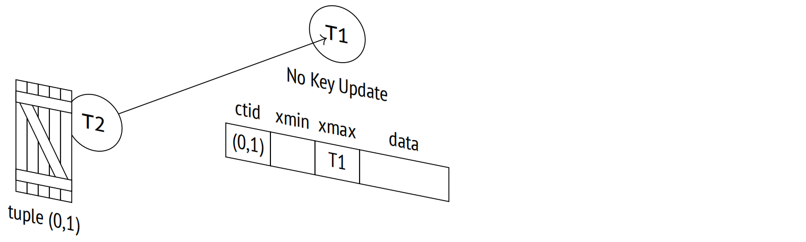
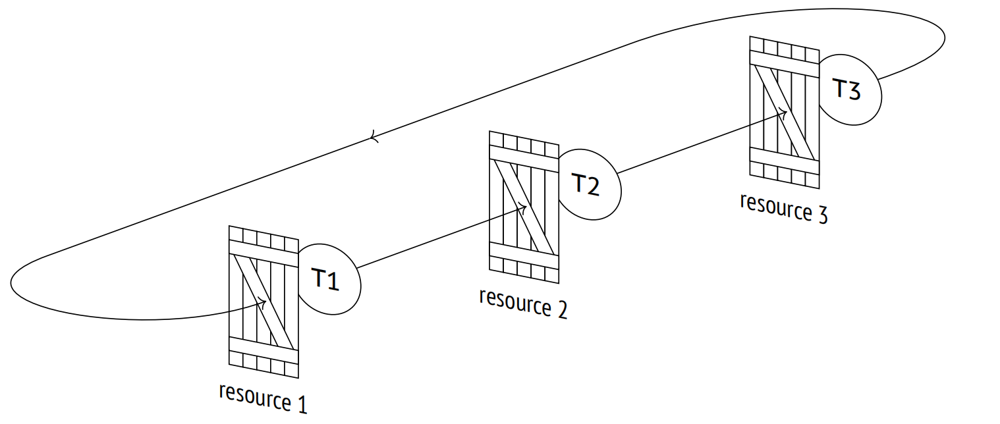

第 13 章：行级锁
13.1 锁设计
得益于快照隔离，读取时无需对堆元组加锁。但是，不允许两个写事务同时修改同一行。在这种情况下，必须对行加锁，但为此重锁并不是一个好的选择：每个重锁都会占用服务器共享内存中的空间 (数百字节，更别提所有支持的基础设施了)，而且 PostgreSQL 的内部机制也不适用于处理大量并发的重锁。
一些数据库系统通过锁升级来解决这个问题：如果行级锁太多，它们会被更细粒度的单个锁替换 (例如，页级锁或表级锁)。这简化了实现，但极大限制了系统的吞吐量。
在 PostgreSQL 中，某个特定的行是否被锁定的信息仅保存在其当前堆元组的元组头中。行级锁实际上是堆页面中的属性，而不是实际的锁，并且不会以任何方式反映在 RAM 中。
行通常在被更新或删除时进行加锁。在这两种情况下，行的当前版本都被标记为已删除。用于此目的的属性是在 xmax 字段中指定的当前事务 ID，同时也是这个 ID 表明该行被锁定了 (与额外的提示位相结合)。如果一个事务想要修改一行，但是在其当前版本的 xmax 字段上看到一个活跃的事务 ID，那么它必须等待这个事务完成。一旦事务结束，所有的锁都会被释放，等待的事务便可以继续。
此机制允许按需锁定任意数量的行，而无需额外成本。
这种方案的缺点是其他进程无法形成队列，因为 RAM 中不包含关于这种锁的信息。因此，仍然需要重锁：等待行释放的进程会请求当前正在处理该行的事务 ID 上的锁。一旦事务完成，这一行便再次可用。因此，重锁的数量与并发进程的数量成正比，而不是被修改的行数。
13.2 行级锁模式
行级锁支持四种模式 1。其中两种实现了独占锁，一次只能由一个事务获取，而另外两种提供了共享锁，可以同时由多个事务持有。
以下是这些模式的兼容性矩阵：
13.2.1 独占模式
Update 模式允许修改任何元组字段，甚至删除整个元组，而 No Key Update 模式只允许那些不涉及与唯一索引相关字段的更改 (换句话说，外键必须不受影响)。
UPDATE 命令会自动选择可能最弱的锁定模式；键通常保持不变，因此行通常在 No Key Update 模式下被锁定。
让我们创建一个函数，使用 pageinspect 显示我们感兴趣的一些元组元数据，即 xmax 字段和若干提示位：
=> CREATE FUNCTION row_locks(relname text, pageno integer)
RETURNS TABLE(
ctid tid, xmax text,
lock_only text, is_multi text,
keys_upd text, keyshr text,
shr text
)
AS $$
SELECT (pageno,lp)::text::tid,
t_xmax,
CASE WHEN t_infomask & 128 = 128 THEN 't' END,
CASE WHEN t_infomask & 4096 = 4096 THEN 't' END,
CASE WHEN t_infomask2 & 8192 = 8192 THEN 't' END,
CASE WHEN t_infomask & 16 = 16 THEN 't' END,
CASE WHEN t_infomask & 16+64 = 16+64 THEN 't' END
FROM heap_page_items(get_raw_page(relname,pageno))
ORDER BY lp;
$$ LANGUAGE sql;现在在 accounts 表上开启一个事务，以更新第一个帐户的余额 (键保持不变) 和第二个帐户的 ID (键更新了)：
=> BEGIN;
=> UPDATE accounts SET amount = amount + 100.00 WHERE id = 1;
=> UPDATE accounts SET id = 20 WHERE id = 2;页面现在包含以下元数据：
=> SELECT * FROM row_locks('accounts',0) LIMIT 2;
ctid | xmax | lock_only | is_multi | keys_upd | keyshr | shr
−−−−−−−+−−−−−−−−+−−−−−−−−−−−+−−−−−−−−−−+−−−−−−−−−−+−−−−−−−−+−−−−−
(0,1) | 122858 | | | | |
(0,2) | 122858 | | | t | |
(2 rows)锁定模式由 keys_updated 提示位定义。
=> ROLLBACK；SELECT FOR 命令使用与锁定属性相同的 xmax 字段，但在这种情况下还必须设置 xmax_lock_only 提示位。这个提示位表示这条元组被锁定而不是被删除，这意味着它仍然是当前版本：
=> BEGIN;
=> SELECT * FROM accounts WHERE id = 1 FOR NO KEY UPDATE;
=> SELECT * FROM accounts WHERE id = 2 FOR UPDATE;
=> SELECT * FROM row_locks('accounts',0) LIMIT 2;
ctid | xmax | lock_only | is_multi | keys_upd | keyshr | shr
−−−−−−−+−−−−−−−−+−−−−−−−−−−−+−−−−−−−−−−+−−−−−−−−−−+−−−−−−−−+−−−−−
(0,1) | 122859 | t | | | |
(0,2) | 122859 | t | | t | |
(2 rows)
=> ROLLBACK;13.2.2 共享模式
当需要读取行时，可以使用共享模式，但必须禁止其他事务对这一行的更改。Key Share 模式允许更新除键属性之外的任何元组字段。
在所有共享模式中，PostgreSQL 内核仅使用 Key Share 模式，这在检查外键时使用。由于它与 No Key Update 独占模式兼容，因此外键检查不会干扰非键属性的并发更新。至于应用，可以使用任何它们喜欢的共享模式。
再次强调：简单的 SELECT 命令从不使用行级锁。
=> BEGIN;
=> SELECT * FROM accounts WHERE id = 1 FOR KEY SHARE;
=> SELECT * FROM accounts WHERE id = 2 FOR SHARE;以下是我们可以在堆元组中看到的：
=> SELECT * FROM row_locks('accounts',0) LIMIT 2;
ctid | xmax | lock_only | is_multi | keys_upd | keyshr | shr
−−−−−−−+−−−−−−−−+−−−−−−−−−−−+−−−−−−−−−−+−−−−−−−−−−+−−−−−−−−+−−−−−
(0,1) | 122860 | t | | | t |
(0,2) | 122860 | t | | | t | t
(2 rows)这两个操作都设置了 xmax_keyshr_lock 位，但你可以通过其他提示位识别 Share 模式 2。
13.3 组事务
正如我们所见，锁定属性由 xmax 字段表示，该字段被设置为获取锁的事务 ID。那么，当多个事务同时持有共享锁时，这个属性是如何设置的呢？
在处理共享锁时，PostgreSQL 会使用所谓的组事务 3。组事务是被分配了单独 ID 的一组事务。关于组内成员及其锁定模式的详细信息存储在 PGDATA/pg_multixact 目录下。为了更快地访问，锁定的页面会缓存在服务器的共享内存中 4；所有更改都会被记录以确保容错性。
组事务 ID 与常规的事务 ID 长度相同，均是 32 位，但它们是独立分发的。这意味着事务和组事务可能具有相同的 ID。为了区分两者，PostgreSQL 使用了一个额外的提示位：xmax_is_multi。
让我们增加由另一个事务获取的独占锁 (Key Share 和 No Key Update 模式兼容)：
=> BEGIN; => UPDATE accounts SET amount = amount + 100.00 WHERE id = 1;
=> SELECT * FROM row_locks('accounts',0) LIMIT 2;
ctid | xmax | lock_only | is_multi | keys_upd | keyshr | shr
−−−−−−−+−−−−−−−−+−−−−−−−−−−−+−−−−−−−−−−+−−−−−−−−−−+−−−−−−−−+−−−−−
(0,1) | 1 | | t | | |
(0,2) | 122860 | t | | | t | t
(2 rows)xmax_is_multi 位表明第一行使用的是组事务 ID 而不是常规 ID。
在不深入实现细节的情况下，让我们使用 pgrowlocks 扩展显示所有可能的行级锁信息：
=> CREATE EXTENSION pgrowlocks;
=> SELECT * FROM pgrowlocks('accounts') \gx
−[ RECORD 1 ]−−−−−−−−−−−−−−−−−−−−−−−−−−−−−
locked_row | (0,1)
locker | 1
multi | t
xids | {122860,122861}
modes | {"Key Share","No Key Update"}
pids | {30423,30723}
−[ RECORD 2 ]−−−−−−−−−−−−−−−−−−−−−−−−−−−−−
locked_row | (0,2)
locker | 122860
multi | f
xids | {122860}
modes | {"For Share"}
pids | {30423}这看起来很像查询 pg_locks 视图，但 pgrowlocks 函数必须访问堆页面，因为 RAM 并不包含关于行级锁的信息。
=> COMMIT;=> ROLLBACK;
由于组事务 ID 是 32 位的，因此与常规事务 ID 一样，它们也会因为计数器限制而发生回卷。所以，PostgreSQL 必须以类似于冻结的方式处理组事务 ID：用新的组事务 ID 替换老的 (或者如果当时只有一个事务持有锁，则使用常规事务 ID 替换) 5。
但常规事务 ID 仅在 xmin 字段中被冻结 (非空的 xmax 字段表示元组已过期，并将很快被删除)，对于组事务，必须冻结 xmax 字段：当前行版本可能会被新事务在共享模式下反复锁定。
组事务的冻结可以通过服务器参数进行管理，类似于为常规冻结提供的参数：vacuum_multixact_freeze_min_age、vacuum_multixact_freeze_table_age、autovacuum_multixact_freeze_max_age 以及 vacuum_multixact_failsafe_age。
13.4 等待队列
13.4.1 独占模式
虽然行级锁只是一个属性，但是队列的排列方式并不是那么简单。当某个事务准备修改一行时，它必须遵循以下步骤 6：
-
如果 xmax 字段和提示位表明该行以不兼容的模式被锁定，那么获取正在被修改元组的独占重锁。
-
如有必要，通过请求 xmax 事务 ID 上的锁 (如果 xmax 包含组事务 ID，则请求多个事务)，直到所有不兼容的锁都被释放。
-
将自己的 ID 写入到元组头中的 xmax 中，并设置所需的提示位。
-
如果元组锁是在第一步中获取的，则释放它。
元组锁是另一种重锁，具有 tuple 类型 (不要与常规行级锁混淆)。
似乎步骤 1 和步骤 4 看起来是多余的，只需简单地等待所有锁定的事务结束就足够了。但是，如果多个事务试图更新同一行，那么所有的事务都将等待当前正在处理此行的事务。一旦完成，它们会发现自己陷入了竞争，去争夺锁定该行的权利，一些"倒霉"的事务可能不得不无限期地等待。这种情况被称为资源饥饿。
元组锁识别队列中的第一个事务，并保证它将是下一个获得锁的事务。
你可以观察这一点。因为 PostgreSQL 在其操作过程中获取了许多不同的锁，每个锁都在 pg_locks 表中以一个单独的行表示，因此我将在 pg_locks 上创建另一个视图。它将以更简洁的形式显示这些信息，只保留那些我们当前感兴趣的锁 (与 accounts 表和事务本身相关的锁，除了任何虚拟事务 ID 上的锁) ：
=> CREATE VIEW locks_accounts AS
SELECT pid,
locktype,
CASE locktype
WHEN 'relation' THEN relation::regclass::text
WHEN 'transactionid' THEN transactionid::text
WHEN 'tuple' THEN relation::regclass||'('||page||','||tuple||')'
END AS lockid,
mode,
granted
FROM pg_locks
WHERE locktype in ('relation','transactionid','tuple')
AND (locktype != 'relation' OR relation = 'accounts'::regclass)
ORDER BY 1, 2, 3;让我们开启第一个事务并更新一行：
=> BEGIN; => SELECT txid_current(), pg_backend_pid(); txid_current | pg_backend_pid −−−−−−−−−−−−−−+−−−−−−−−−−−−−−−− 122863 | 30723 (1 row) => UPDATE accounts SET amount = amount + 100.00 WHERE id = 1;
该事务已完成工作流的所有四个步骤，现在正持有表上的锁：
=> SELECT * FROM locks_accounts WHERE pid = 30734;
pid | locktype | lockid | mode | granted
−−−−−−−+−−−−−−−−−−−−−−−+−−−−−−−−−−+−−−−−−−−−−−−−−−−−−+−−−−−−−−−
30723 | relation | accounts | RowExclusiveLock | t
30723 | transactionid | 122863 | ExclusiveLock | t
(2 rows)启动第二个事务并尝试更新同一行。该事务将挂起，在等待锁：
=> BEGIN; => SELECT txid_current(), pg_backend_pid(); txid_current | pg_backend_pid −−−−−−−−−−−−−−+−−−−−−−−−−−−−−−− 122864 | 30794 (1 row) => UPDATE accounts SET amount = amount + 100.00 WHERE id = 1;
第二个事务只进行到第二步。因此，除了锁定表及其自身 ID 之外，它还添加了两个锁，这两个锁也在 pg_locks 视图中反映了出来：第一步获取的元组锁和第二步请求的第二个事务 ID 的锁：
=> SELECT * FROM locks_accounts WHERE pid = 30794;
pid | locktype | lockid | mode | granted
−−−−−−−+−−−−−−−−−−−−−−−+−−−−−−−−−−−−−−−+−−−−−−−−−−−−−−−−−−+−−−−−−−−−
30794 | relation | accounts | RowExclusiveLock | t
30794 | transactionid | 122863 | ShareLock | f
30794 | transactionid | 122864 | ExclusiveLock | t
30794 | tuple | accounts(0,1) | ExclusiveLock | t
(4 rows)第三个事务将停在第一步。它尝试获取元组上的锁，并在此处停下：
=> BEGIN; => SELECT txid_current(), pg_backend_pid(); txid_current | pg_backend_pid −−−−−−−−−−−−−−+−−−−−−−−−−−−−−−− 122865 | 30865 (1 row) => UPDATE accounts SET amount = amount + 100.00 WHERE id = 1;
=> SELECT * FROM locks_accounts WHERE pid = 30865;
pid | locktype | lockid | mode | granted
−−−−−−−+−−−−−−−−−−−−−−−+−−−−−−−−−−−−−−−+−−−−−−−−−−−−−−−−−−+−−−−−−−−−
30865 | relation | accounts | RowExclusiveLock | t
30865 | transactionid | 122865 | ExclusiveLock | t
30865 | tuple | accounts(0,1) | ExclusiveLock | f
(3 rows)第四个以及所有后续尝试更新这一行的事务在这方面与第三个事务没有区别：所有事务都将等待相同的元组锁。
=> BEGIN; => SELECT txid_current(), pg_backend_pid(); txid_current | pg_backend_pid −−−−−−−−−−−−−−+−−−−−−−−−−−−−−−− 122866 | 30936 (1 row) => UPDATE accounts SET amount = amount + 100.00 WHERE id = 1;
=> SELECT * FROM locks_accounts WHERE pid = 30865;
pid | locktype | lockid | mode | granted
−−−−−−−+−−−−−−−−−−−−−−−+−−−−−−−−−−−−−−−+−−−−−−−−−−−−−−−−−−+−−−−−−−−−
30865 | relation | accounts | RowExclusiveLock | t
30865 | transactionid | 122865 | ExclusiveLock | t
30865 | tuple | accounts(0,1) | ExclusiveLock | f
(3 rows)要获取当前等待的全貌，可以使用锁定进程的信息扩展 pg_stat_activity 视图：
=> SELECT pid,
wait_event_type,
wait_event,
pg_blocking_pids(pid)
FROM pg_stat_activity
WHERE pid IN (30723,30794,30865,30936);
pid | wait_event_type | wait_event | pg_blocking_pids
−−−−−−−+−−−−−−−−−−−−−−−−−+−−−−−−−−−−−−−−−+−−−−−−−−−−−−−−−−−−
30723 | Client | ClientRead | {}
30794 | Lock | transactionid | {30723}
30865 | Lock | tuple | {30794}
30936 | Lock | tuple | {30794,30865}
(4 rows)如果中止第一个事务，一切将按预期进行：所有后续事务将在不跳过队列的情况下向前移动一步。
然而，第一个事务更有可能被提交。在可重复读或可序列化隔离级别下，这将导致序列化失败，因此第二个事务将不得不被中止 7 (队列中所有后续的事务也将被中止)。但在读已提交隔离级别下，修改的行会被重新读取，并重试其更新操作。
因此，提交第一个事务：
=> COMMIT;
第二个事务醒来并成功完成了工作流的第三步和第四步：
UPDATE 1
=> SELECT * FROM locks_accounts WHERE pid = 30794;
pid | locktype | lockid | mode | granted
−−−−−−−+−−−−−−−−−−−−−−−+−−−−−−−−−−+−−−−−−−−−−−−−−−−−−+−−−−−−−−−
30794 | relation | accounts | RowExclusiveLock | t
30794 | transactionid | 122864 | ExclusiveLock | t
(2 rows)一旦第二个事务释放了元组锁，第三个事务也会被唤醒，但它发现新元组的 xmax 字段已经包含了一个不同的 ID。
至此，上述工作流结束了。在读已提交隔离级别下，还会进行一次尝试锁定行的操作 8，但没有遵循概述的步骤。第三个事务现在正在等待第二个事务完成，而没有尝试获取元组锁：
=> SELECT * FROM locks_accounts WHERE pid = 30865;
pid | locktype | lockid | mode | granted
−−−−−−−+−−−−−−−−−−−−−−−+−−−−−−−−−−+−−−−−−−−−−−−−−−−−−+−−−−−−−−−
30865 | relation | accounts | RowExclusiveLock | t
30865 | transactionid | 122864 | ShareLock | f
30865 | transactionid | 122865 | ExclusiveLock | t
(3 rows)第四个事务同样：
=> SELECT * FROM locks_accounts WHERE pid = 30936;
pid | locktype | lockid | mode | granted
−−−−−−−+−−−−−−−−−−−−−−−+−−−−−−−−−−+−−−−−−−−−−−−−−−−−−+−−−−−−−−−
30936 | relation | accounts | RowExclusiveLock | t
30936 | transactionid | 122864 | ShareLock | f
30936 | transactionid | 122866 | ExclusiveLock | t
(3 rows)现在，第三个和第四个事务都在等待第二个事务完成，有陷入竞争状态的风险。队列实际上已经瓦解了。

如果其他事务在队列还在的时候加入了队列，那么所有事务都会被拖入到这场竞争中。
结论是：在多个并发进程中更新同一行不是一个好主意。在高负载下，这个热点很快就会变成一个瓶颈，导致性能问题。
让我们提交所有已开启的事务。
=> COMMIT;
UPDATE 1 => COMMIT;
UPDATE 1 => COMMIT;
13.4.2 共享模式
PostgreSQL 仅在进行参照完整性检查时获取共享锁。在高负载应用中使用共享锁可能会导致资源饥饿，而两级锁定模型无法防止这种情况的发生。
让我们回顾一下事务锁定一行应采取的步骤：
-
如果 xmax 字段和提示位表明该行以不兼容的模式被锁定，那么获取正在被修改元组的独占重锁。
-
如有必要，通过请求 xmax 事务 ID 上的锁 (如果 xmax 包含组事务 ID，则请求多个事务)，直到所有不兼容的锁都被释放。
-
将自己的 ID 写入到元组头中的 xmax 中，并设置所需的提示位。
-
如果元组锁是在第一步中获取的，则释放它。
前两步意味着，如果锁定模式兼容，事务将跳过队列。
让我们从头开始我们的实验。
=> TRUNCATE accounts;
=> INSERT INTO accounts(id, client, amount)
VALUES
(1,'alice',100.00),
(2,'bob',200.00),
(3,'charlie',300.00);开启第一个事务：
=> BEGIN; => SELECT txid_current(), pg_backend_pid(); txid_current | pg_backend_pid −−−−−−−−−−−−−−+−−−−−−−−−−−−−−−− 122869 | 30723 (1 row)
这一行现在以共享模式锁定：
=> SELECT * FROM accounts WHERE id = 1 FOR SHARE;
第二个事务尝试更新同一行，但无法做到：Share 模式和 No Key Update 模式不兼容：
=> BEGIN; => SELECT txid_current(), pg_backend_pid(); txid_current | pg_backend_pid −−−−−−−−−−−−−−+−−−−−−−−−−−−−−−− 122870 | 30794 (1 row) => UPDATE accounts SET amount = amount + 100.00 WHERE id = 1;
等待第一个事务完成的同时，第二个事务像之前的例子一样持有元组锁：
=> SELECT * FROM locks_accounts WHERE pid = 30794;
pid | locktype | lockid | mode | granted
−−−−−−−+−−−−−−−−−−−−−−−+−−−−−−−−−−−−−−−+−−−−−−−−−−−−−−−−−−+−−−−−−−−−
30794 | relation | accounts | RowExclusiveLock | t
30794 | transactionid | 122869 | ShareLock | f
30794 | transactionid | 122870 | ExclusiveLock | t
30794 | tuple | accounts(0,1) | ExclusiveLock | t
(4 rows)现在让第三个事务以共享模式锁定该行。这种锁与已获取的锁兼容，因此这个事务跳过了队列：
=> BEGIN; => SELECT txid_current(), pg_backend_pid(); txid_current | pg_backend_pid −−−−−−−−−−−−−−+−−−−−−−−−−−−−−−− 122871 | 30865 (1 row) => SELECT * FROM accounts WHERE id = 1 FOR SHARE;
现在有两个事务锁定了同一行：
=> SELECT * FROM pgrowlocks('accounts') \gx
−[ RECORD 1 ]−−−−−−−−−−−−−−−
locked_row | (0,1)
locker | 2
multi | t
xids | {122869,122871}
modes | {Share,Share}
pids | {30723,30865}如果第一个事务在此时完成，第二个事务醒来后发现该行仍被锁定，并回到队列中，但这次它将发现自己位于第三个事务之后：
=> COMMIT;
=> SELECT * FROM locks_accounts WHERE pid = 30794;
pid | locktype | lockid | mode | granted
−−−−−−−+−−−−−−−−−−−−−−−+−−−−−−−−−−−−−−−+−−−−−−−−−−−−−−−−−−+−−−−−−−−−
30794 | relation | accounts | RowExclusiveLock | t
30794 | transactionid | 122870 | ExclusiveLock | t
30794 | transactionid | 122871 | ShareLock | f
30794 | tuple | accounts(0,1) | ExclusiveLock | t
(4 rows)只有当第三个事务完成时，第二个事务才能进行更新 (除非在此时间间隔内出现了其他共享锁)。
=> COMMIT;
UPDATE 1 => COMMIT;
外键检查不太可能引起任何问题，因为键属性通常保持不变，Key Share 可以与 No Key Update 一起使用。但在大多数情况下，你应该避免在应用中使用共享行级锁。
13.5 无等待锁定
SQL 命令通常会等待所请求的资源被释放。但有时如果无法立即获取到锁，取消操作是有意义的。为此，像 SELECT ，LOCK 和 ALTER 命令提供了 NOWAIT 子句。
让我们锁定一行：
=> BEGIN;
=> UPDATE accounts SET amount = amount + 100.00 WHERE id = 1;如果请求的资源已被锁定，带有 NOWAIT 子句的命令将立即完成并报错：
=> SELECT * FROM accounts FOR UPDATE NOWAIT; ERROR: could not obtain lock on row in relation "accounts"
此类错误可以被应用代码捕获并处理。
UPDATE 和 DELETE 命令没有 NOWAIT 子句。作为替代，你可以尝试使用 SELECT FOR UPDATE NOWAIT 命令锁定行，然后在尝试成功的情况下更新或删除它。
在一些罕见的情况下，跳过已经被锁定的行并立即开始处理可用的行可能会更方便。这正是带有 SKIP LOCKED 子句的 SELECT FOR 语句所执行的操作：
=> SELECT * FROM accounts ORDER BY id FOR UPDATE SKIP LOCKED LIMIT 1; id | client | amount −−−−+−−−−−−−−+−−−−−−−− 2 | bob | 200.00 (1 row)
在这个例中，第一行 (已被锁定) 被跳过了，查询锁定并返回了第二行。
此方法使我们能够批量处理行或配置事件队列的并行处理。然而，避免为该命令创建其他用例 — 大多数任务可以使用更简单的方式来处理。
最后需要提及的是，你可以通过设置超时来避免长时间等待：
=> SET lock_timeout = '1s'; => ALTER TABLE accounts DROP COLUMN amount; ERROR: canceling statement due to lock timeout
由于未能在一秒钟内获取锁，该命令以报错结束。超时不仅可以在会话级别设置，还可以在更低级别设置，例如，对于某个特定的事务。
这种方法在高负载下执行需要独占锁的命令时，可以防止在表处理期间出现长时间的等待。如果发生错误，可以在一段时间后重试此命令。
statement_timeout 限制了操作执行的总时间，lock_timeout 参数定义了等待锁花费的最长时间。
=> ROLLBACK;13.6 死锁
有时，一个事务可能需要另一个事务当前正在使用的资源，而后者又可能在等待第三个事务锁定的资源，依此类推。这样的事务使用重锁排队。
但是，偶尔已在队列中的事务可能需要另一个资源，因此它必须再次加入同一个队列，并等待这个资源释放。这时便发生了死锁 9：队列现在有一个无法自行解决的循环依赖。
为了更好地可视化，让我们画一个等待图。它的节点表示活跃进程，而以箭头表示的边从等待锁的进程指向持有这些锁的进程。如果图中有一个循环，即一个节点可以沿着箭头到达自己，则意味着发生了死锁。
此处的插图显示的是事务而不是进程。这种替代通常是可接受的，因为一个事务由一个进程执行，并且锁只能在事务内获取。但通常来说，谈论进程更为正确，因为有些锁在事务完成时可能不会立即释放。
如果发生了死锁，并且没有任何参与者设置了超时，那么事务将永远相互等待。这就是为什么锁管理器 10 执行自动死锁检测的原因。
然而，这种检测需要一些代价，不应该在每次请求锁时都浪费 (毕竟，死锁并不会经常发生)。
因此，如果进程尝试获取锁失败，并在加入队列后进入休眠状态，PostgreSQL 会自动设置一个由 deadlock_timeout 参数 11 定义的超时时间。如果资源在此期间就变得可用，那么很好，这样就可以避免额外的检测成本。但是，如果在 deadlock_timeout 时间单位之后，仍然在等待，等待进程就会醒来并发起检测。12
这种检测实际上是构建一个等待图，并在其中搜索循环 13。为了"冻结"图的当前状态，PostgreSQL 将在整个检测期间停止对所有重锁的处理。
如果没有检测到死锁，进程将再次进入休眠状态；迟早会轮到它。
如果检测到死锁，其中一个事务将被强制终止，从而释放这个事务的锁并使其他事务能够继续执行。在大多数情况下，是发起检测的事务被中断，但如果循环中包括一个 autovacuum 进程，并且当前没有在冻结元组以防止回卷，那么服务器会终止 autovacuum 进程，因为它的优先级较低。
死锁通常表明应用程序设计不良。要发现这种情况，需要注意两件事：服务器日志中相应的消息以及 pg_stat_database 表中不断增加的 deadlocks 的值。
13.6.1 行更新导致的死锁
虽然死锁最终是由重锁导致的，但通常是以不同顺序获取的行级锁导致了死锁。
假设一个事务打算在两个帐户之间转移 100 美元。首先从第一个账户中提取这笔款项：
=> BEGIN;
=> UPDATE accounts SET amount = amount - 100.00 WHERE id = 1;
UPDATE 1与此同时，另一个事务打算从第二个帐户转移 10 美元到第一个帐户中。首先从第二个账户中提取这笔款项：
=> BEGIN; => UPDATE accounts SET amount = amount - 10.00 WHERE id = 2; UPDATE 1
现在，第一个事务尝试增加第二个账户中的金额，但发现相应的行已被锁定：
=> UPDATE accounts SET amount = amount + 100.00 WHERE id = 2;然后第二个事务尝试更新第一个帐户，但也被锁定了：
=> UPDATE accounts SET amount = amount + 10.00 WHERE id = 1;
这种循环等待永远无法自行解决。由于无法在一秒内获得资源，第一个事务启动死锁检测，并被服务器中止：
ERROR: deadlock detected
DETAIL: Process 30423 waits for ShareLock on transaction 122877;
blocked by process 30723.
Process 30723 waits for ShareLock on transaction 122876; blocked by
process 30423.
HINT: See server log for query details.
CONTEXT: while updating tuple (0,2) in relation "accounts"现在第二个事务可以继续进行，它被唤醒并执行更新：
UPDATE 1
让我们结束事务。
=> ROLLBACK;
=> ROLLBACK;执行此类操作的正确方式是以相同的顺序锁定资源。例如，在这个特定案例中，账户可以根据它们的编号按升序进行锁定。
13.6.2 两条 UPDATE 语句之间的死锁
在某些情况下，死锁似乎是不可能的，但确实会发生。
我们通常认为 SQL 命令是原子的，但它真的是原子的吗？让我们仔细看看 UPDATE：这个命令在更新行的时候才锁定它们，而不是立即全部锁定，而且这种锁定并不是同时发生的。因此如果有一个 UPDATE 命令以一种顺序修改多行，而另一个 UPDATE 命令以不同的顺序执行相同的操作，就可能会发生死锁。
让我们复现这个场景。首先，我们在 amount 列上降序创建索引：
=> CREATE INDEX ON accounts(amount DESC);为了能够观察这个过程，我们可以编写一个函数以放慢速度：
=> CREATE FUNCTION inc_slow(n numeric)
RETURNS numeric
AS $$
SELECT pg_sleep(1);
SELECT n + 100.00;
$$ LANGUAGE sql;第一个 UPDATE 命令将更新所有元组。执行计划依赖于对整个表的顺序扫描。
=> EXPLAIN (costs off)
UPDATE accounts SET amount = inc_slow(amount);
QUERY PLAN
−−−−−−−−−−−−−−−−−−−−−−−−−−−
Update on accounts
−> Seq Scan on accounts
(2 rows)为了确保堆页面基于 amount 列以升序存储行，我们需要截断表并重新插入行：
=> TRUNCATE accounts;
=> INSERT INTO accounts(id, client, amount)
VALUES
(1,'alice',100.00),
(2,'bob',200.00),
(3,'charlie',300.00);
=> ANALYZE accounts;
=> SELECT ctid, * FROM accounts;
ctid | id | client | amount
−−−−−−−+−−−−+−−−−−−−−−+−−−−−−−−
(0,1) | 1 | alice | 100.00
(0,2) | 2 | bob | 200.00
(0,3) | 3 | charlie | 300.00
(3 rows)顺序扫描将以相同的顺序更新行 (但对于大表来说并非总是如此)。
开始更新：
=> UPDATE accounts SET amount = inc_slow(amount);
同时，我们将在另一个会话中禁止顺序扫描：
=> SET enable_seqscan = off;
因此，规划器为下一个 UPDATE 命令选择了索引扫描。
=> EXPLAIN (costs off) UPDATE accounts SET amount = inc_slow(amount) WHERE amount > 100.00; QUERY PLAN −−−−−−−−−−−−−−−−−−−−−−−−−−−−−−−−−−−−−−−−−−−−−−−−−−−−−−− Update on accounts −> Index Scan using accounts_amount_idx on accounts Index Cond: (amount > 100.00) (3 rows)
第二行和第三行满足条件；由于索引是降序的，因此行将以相反的顺序被更新。
让我们开始下一个更新：
=> UPDATE accounts SET amount = inc_slow(amount) WHERE amount > 100.00;
pgrowlocks 扩展显示第一个操作已经更新了第一行 (0,1)，而第二个操作已成功更新了最后一行 (0,3):
=> SELECT locked_row, locker, modes FROM pgrowlocks('accounts');
locked_row | locker | modes
−−−−−−−−−−−−+−−−−−−−−+−−−−−−−−−−−−−−−−−−−
(0,1) | 122883 | {"No Key Update"} ← first
(0,3) | 122884 | {"No Key Update"} ← second
(2 rows)又过了一秒。第一个操作已经更新了第二行，另一个操作也希望这样做，但这是不允许的。
=> SELECT locked_row, locker, modes FROM pgrowlocks('accounts');
locked_row | locker | modes
−−−−−−−−−−−−+−−−−−−−−+−−−−−−−−−−−−−−−−−−−
(0,1) | 122883 | {"No Key Update"}
(0,2) | 122883 | {"No Key Update"} ← the first one wins
(0,3) | 122884 | {"No Key Update"}
(3 rows)现在，第一个操作想要更新表的最后一行，但它已经被第二个操作锁定。于是发生了死锁。
其中一个事务被中止：
ERROR: deadlock detected DETAIL: Process 30794 waits for ShareLock on transaction 122883; blocked by process 30723. Process 30723 waits for ShareLock on transaction 122884; blocked by process 30794. HINT: See server log for query details. CONTEXT: while updating tuple (0,2) in relation "accounts"
另一个事务执行完成：
UPDATE 3
尽管这种情况看似不可能，但在高负载系统中执行批量行更新时，确实会发生。
-
postgresql.org/docs/14/explicit-locking#LOCKING-ROWS.html ↩︎
-
include/access/htup_details.h ↩︎
-
backend/access/transam/multixact.c ↩︎
-
backend/access/transam/slru.c ↩︎
-
backend/access/heap/heapam.c, FreezeMultiXactId function ↩︎
-
backend/access/heap/README.tuplock ↩︎
-
backend/executor/nodeModifyTable.c, ExecUpdate function ↩︎
-
backend/access/heap/heapam_handler.c, heapam_tuple_lock function ↩︎
-
postgresql.org/docs/14/explicit-locking#LOCKING-DEADLOCKS.html ↩︎
-
backend/storage/lmgr/README ↩︎
-
backend/storage/lmgr/proc.c, ProcSleep function ↩︎
-
backend/storage/lmgr/proc.c, CheckDeadLock function ↩︎
-
backend/storage/lmgr/deadlock.c ↩︎